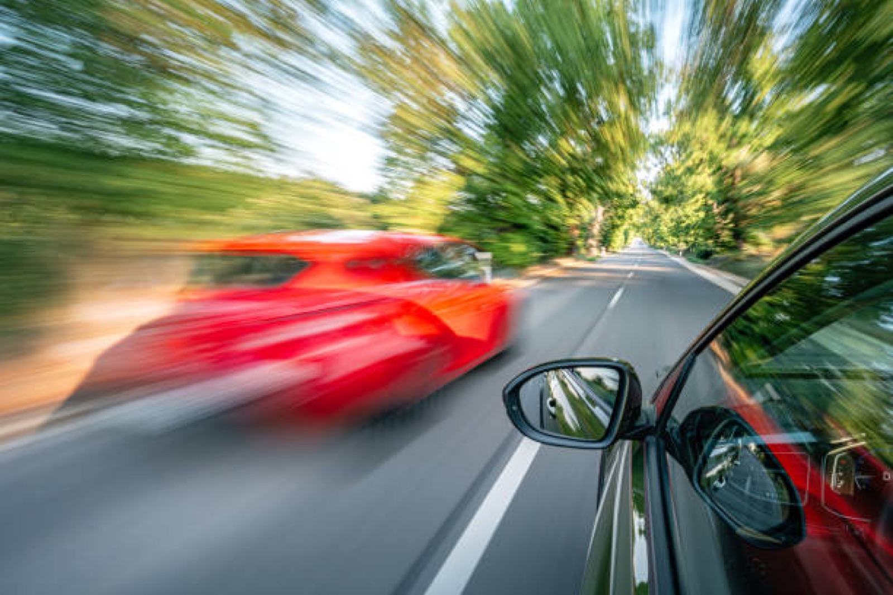
Мастер-класс
Настоящие обгоны
Обгон — одно из самых рискованных действий на дороге. Это всегда про выезд на встречку, принятие решений на скорости, оценку ситуации и прогноз действий других участников движения. Здесь мы разберём, как подготовить обгон, когда от него отказаться и почему важно отработать этот навык на практике.
Раздел 1
Что такое обгон
Обгон — это опережение одного или нескольких транспортных средств, связанное с выездом на полосу, предназначенную для встречного движения, и последующим возвращением на ранее занимаемую полосу.
Обгон = перестроение на встречку, опережение, перестроение в свою полосу. Опережение без выезда на встречку обгоном не является.
Выезд на встречную полосу возможен только на двухполосной дороге (по одной полосе в каждом направлении). Обгоном также называется опережение на трёхполосной дороге с двусторонним движением.
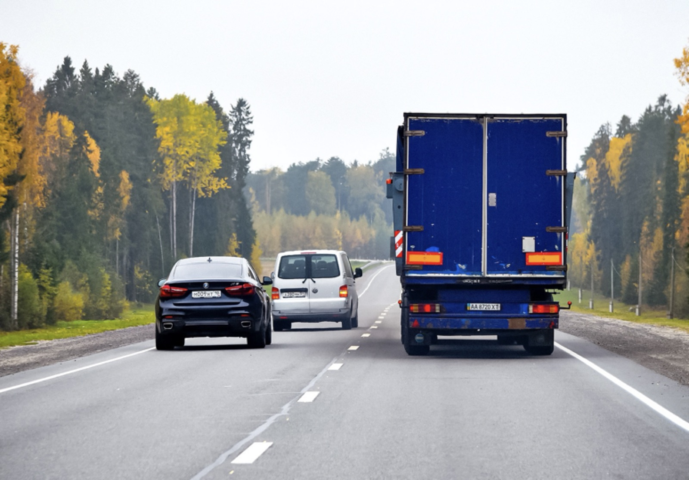
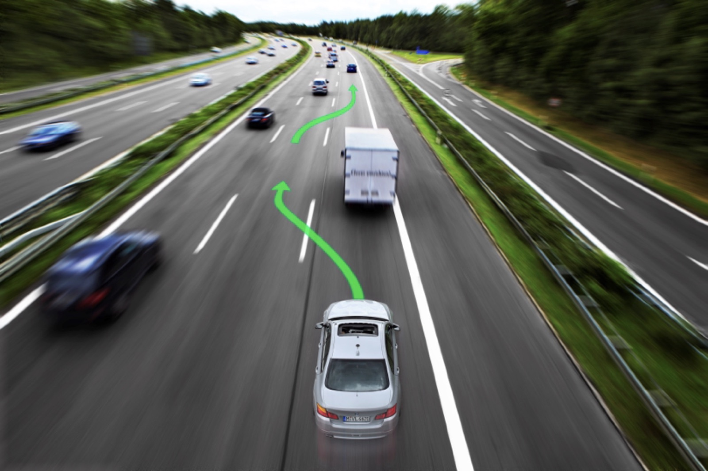
Проверьте себя
На многополосной дороге вы перестроились в соседнюю полосу того же направления и опередили грузовик. Это обгон?
Нет. Выезда на встречную полосу не было — это опережение.
Раздел 2
Путь обгона и скорость
Путь обгона — это расстояние, которое вы проходите на встречной полосе. Рассчитывать его надо заранее — ещё в своей полосе, до того как вы выехали и даже до включения поворотника. Для этого нужна калибровка глазомера и практика: опытный водитель не назовёт путь обгона в метрах, но он всегда знает, хватит ему расстояния для обгона или нет.
Чем выше ваша скорость, тем больше путь на встречке. А чем меньше разница скоростей с обгоняемым — тем путь длиннее. Обгон «в натяг», на чуть большей скорости — самый долгий и опасный.
Калькулятор пути обгона
Подвигайте ползунки и посмотрите, как меняется расстояние на встречной полосе.
Расчёт для общего понимания: путь обгона = ваша скорость × время на встречке, а время зависит от длины обгоняемого и разницы скоростей (запас спереди и сзади — по 15 м). Вычислять в метрах не обязательно — это интерактив для общего понимания.
Именно поэтому главный навык — глазомер: вовремя решить, хватит ли места, и не догадываться об этом уже на встречке.
Раздел 3
Как подготовить обгон
Для подготовки задаём себе три вопроса:
Подготовка
- Прижаться ближе к середине дороги — чтобы лучше видеть встречку.
- Увеличить дистанцию до машины впереди — так встречку будет видно ещё лучше, и появится место для разгона в своей полосе.
- Набрать скорость в своей полосе. Начинать набор скорости на встречке — ошибка.
Имею право отказаться! Если есть сомнения, можно не обгонять. Это не слабость, а рациональное решение. Доверяйте себе!
Выполнение обгона
- Включить левый поворотник — так вы заявляете о своём намерении выполнить обгон.
- Перестроиться на встречку уже на скорости.
- Убедиться, что не подрезаю обгоняемого.
- Вернуться в свой ряд с правым поворотником.
По правилам, мы должны выключить левый поворотник сразу после перестроения на встречку. Но в жизни всё происходит так быстро, что левый поворотник сразу переключается на правый.
Не торопимся и не подрезаем обгоняемый автомобиль! Это самая распространённая ошибка.
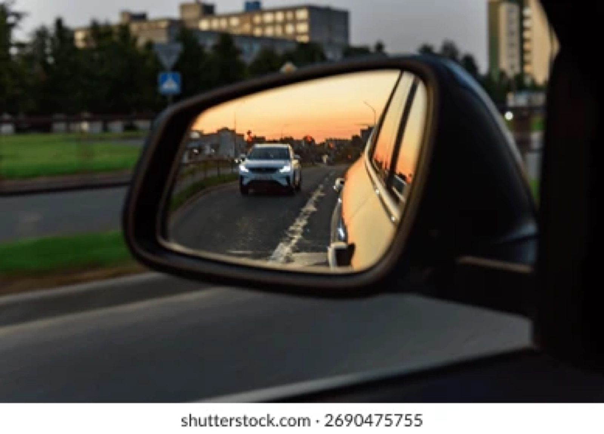
Проверьте себя
Вы решили обогнать и уже начали выезжать на встречку, но поняли, что не успеваете. Что делать?
Возвращаемся в свою полосу и отказываемся от обгона. Решение принимается до выезда — если появились сомнения, обгон не продолжаем.
Раздел 4
Когда обгон выполнять запрещается
Даже при свободной встречке обгон запрещён, если:
-
✕
ТС впереди выполняет обгон или объезд, либо подало сигнал поворота налево. Обгонять вдвоём нельзя.
-
✕
Следующее за вами ТС уже начало обгон. Значит, ваш обгон откладывается.
-
✕
Вы не сможете вернуться, не создавая помех. Нет «места» в своей полосе — нет обгона. Не нужно рассчитывать, что вас пустят вернуться.
Обгон — это полностью решение водителя. Нельзя полагаться на подсказки других водителей или пассажиров и рассчитывать, что вас пропустят, дадут втиснуться в свой ряд. Все риски берём на себя и действуем разумно.
Обгоняемый не должен мешать обгону.
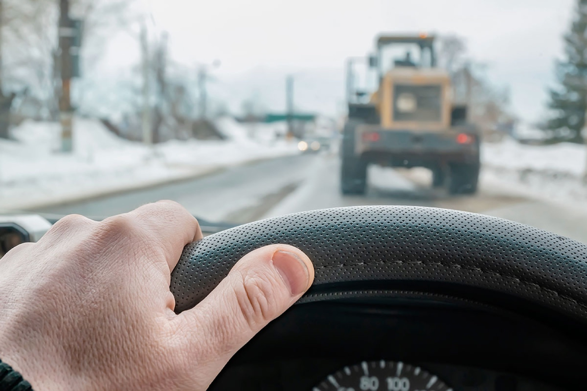
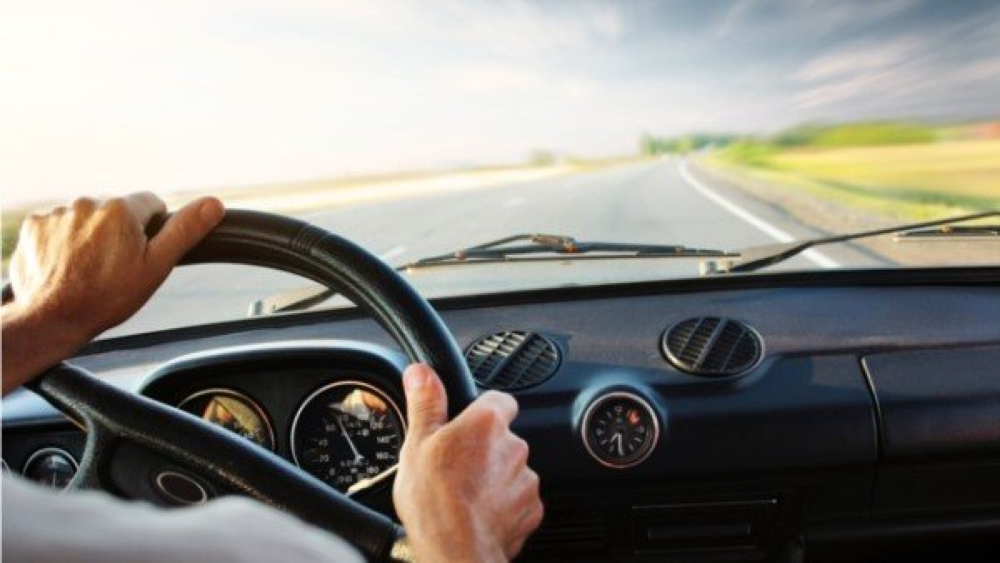
Проверьте себя
Машина впереди мигнула левым поворотником. Встречка пуста. Можно обгонять?
Нет. Впереди идущее ТС подало сигнал поворота налево — обгон запрещён, даже если встречная полоса свободна.
Кейс: обгоняемый ускорился
Вы начали обгон, а обгоняемое ТС ускорилось. Что будете делать?
а) Обгонять любой ценой
б) Вернусь в свою полосу и откажусь от обгона
в) Буду сигналить и кричать
Правильный ответ: б. Культура вождения у всех разная. К сожалению, есть водители, которые пытаются самоутвердиться, пренебрегая правилами. Таких лучше держать перед собой. Не вступайте в бесполезную и опасную игру — вернитесь в свой ряд.
Раздел 5
Где обгон запрещён
Помимо обстановки, нужно оценить само место на дороге, где вы хотите совершить обгон. Обгон в неположенном месте не только опасен, но и карается лишением прав.
🚦 Регулируемые перекрёстки
Светофор — затягивающий портал. Загорелся зелёный, встречные ускорились, чтобы успеть. Обгон в таких условиях может завершиться лобовым столкновением.
🛣️ Нерегулируемые перекрёстки, если ваша дорога не главная
Это те перекрёстки, где нужно уступать дорогу или применять правило правой руки.
🚸 Пешеходные переходы
Обгонять нельзя, но перестроиться можно.
🚂 Ж/д переезды
И ближе, чем за 100 метров перед ними.
🌉 Мосты, эстакады, путепроводы
И под ними.
🕳️ Тоннели
Обгон запрещён на всём протяжении.
👁️ Ограниченная видимость
В конце подъёма, на опасных поворотах и там, где не видно встречную полосу.
Единственный перекрёсток, где разрешён обгон: неравнозначный, когда вы на главной. При этом вся моя дорога — главная.
Кейс: главная дорога меняет направление
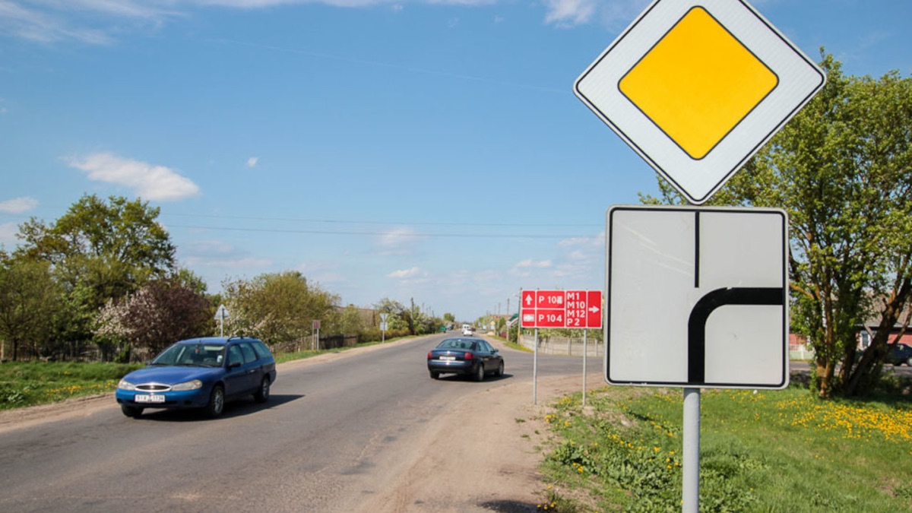
Перекрёсток, на котором главная дорога меняет направление. Можно ли обгонять?
Нет. Если главная дорога меняет направление, значит на главной не только вы: с поперечной дороги на перекрёсток тоже может выехать авто с главными правами. Во время обгона решать, кто первый, по помехе справа будет уже некогда.
Разбор «Здесь можно?»
Отвечайте «Можно» или «Нельзя» — и сразу смотрите пояснение.
Раздел 6
Сколько машин можно обгонять разом?
Ответ — сколько сможем. Ограничения по количеству обгоняемых машин нет: можно обогнать группу ТС за один выезд, если вы успеваете вернуться без помех.
Обгоняемых может быть несколько, а обгоняющий всегда один. Нельзя обгонять «паровозиком».
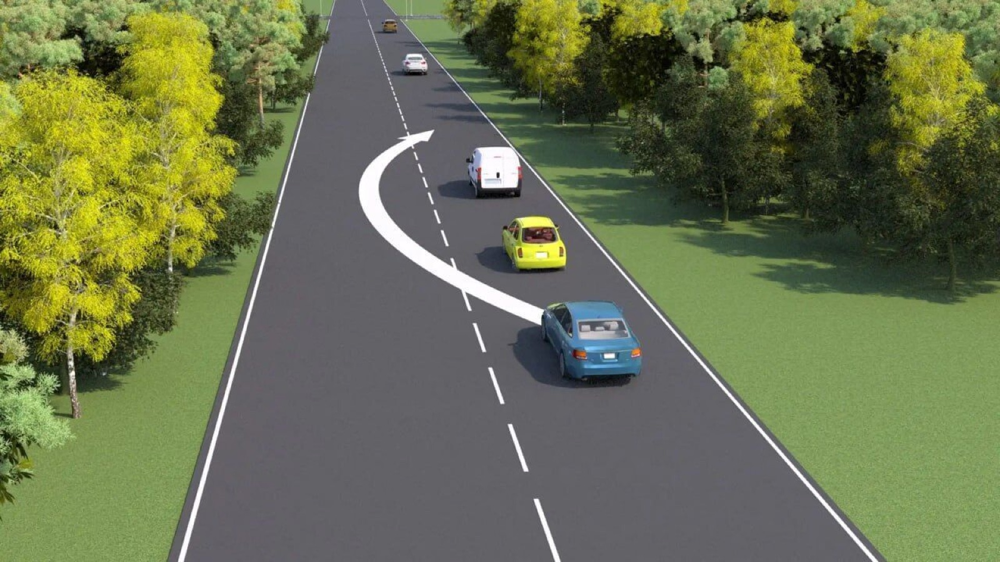
Раздел 7
Знак «Обгон запрещён» и его исключения
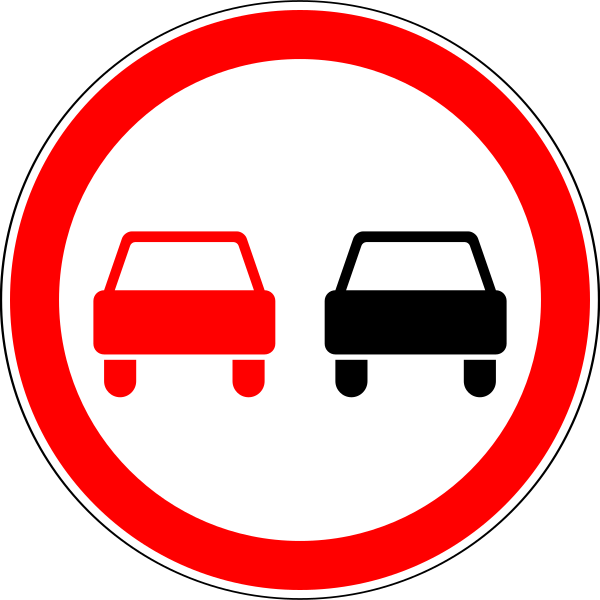
3.20Знак 3.20 «Обгон запрещён» запрещает обгон всех транспортных средств. Но есть исключения — те, кого обгонять можно в зоне действия этого знака:
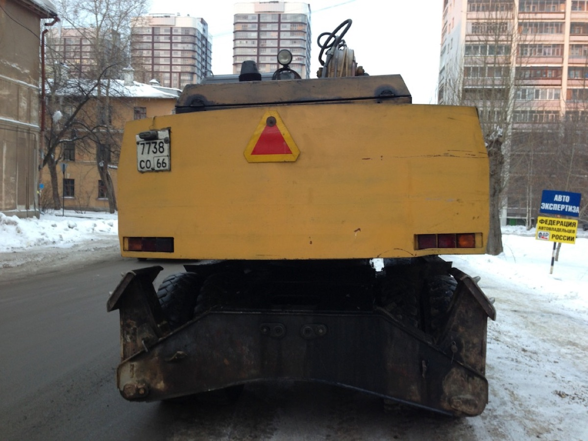
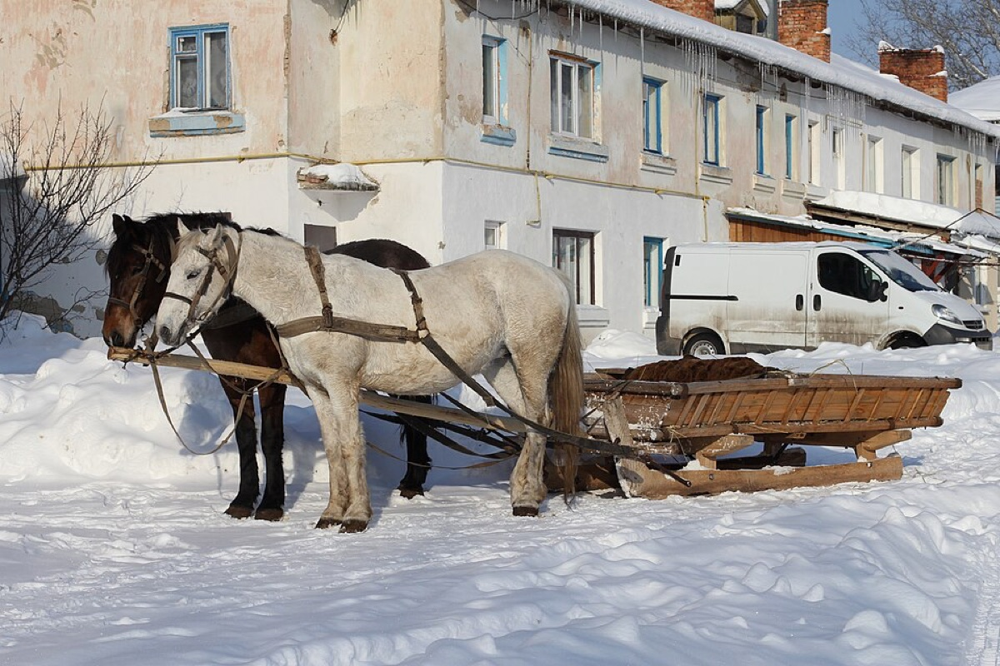
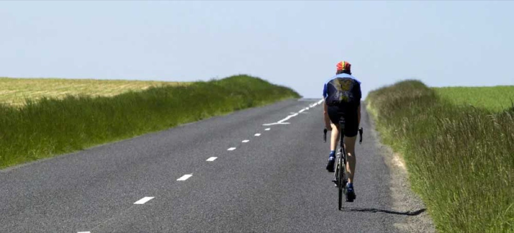
Проверьте себя
Перед вами Kia Rio, которая едет не быстрее 30 км/ч. Можно ли её обогнать в зоне действия знака 3.20?
Нет, нельзя. Если авто едет медленно, это не означает, что оно тихоходное. Это не исключение для знака «Обгон запрещён».
Где заканчивается действие знака «Обгон запрещён»:
1) ближайший перекрёсток,
2) конец или начало населённого пункта (знак на белом фоне),
3) знак «Конец зоны действия» 3.21 или 3.31,
4) в соответствии с табличкой «Зона действия» под самим знаком.
Важно замечать эти знаки и сразу представлять, когда их действие кончится.
Если разметка стала прерывистой, это не значит, что обгонять уже можно. Изменение разметки и «самостийные» перекрёстки не отменяют знак 3.20.
Финал
Итоговый тест
12 вопросов по всему материалу. Выбирайте ответ — в конце увидите результат и разбор.